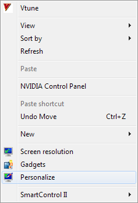
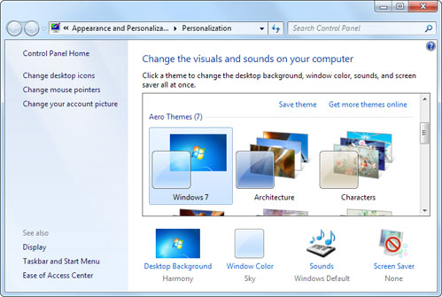
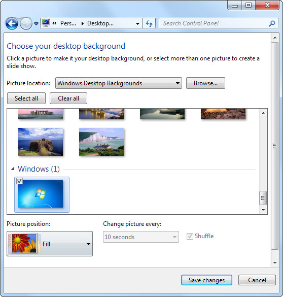
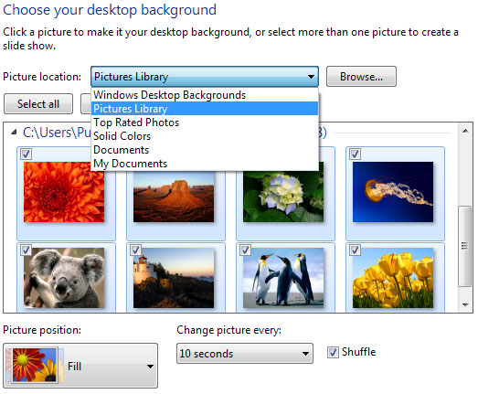
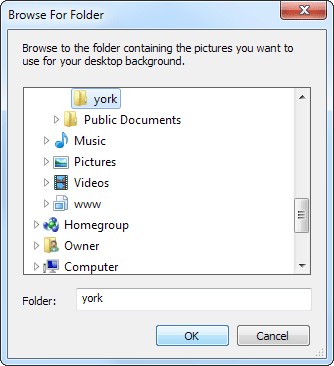
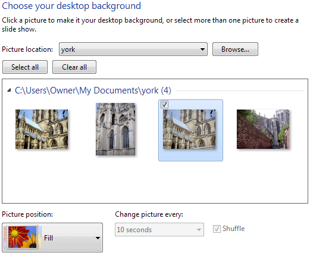
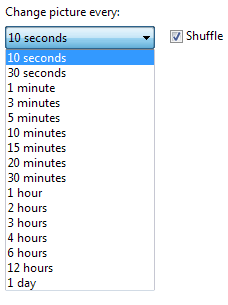
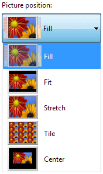
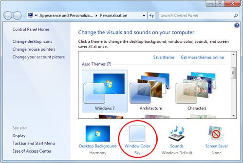
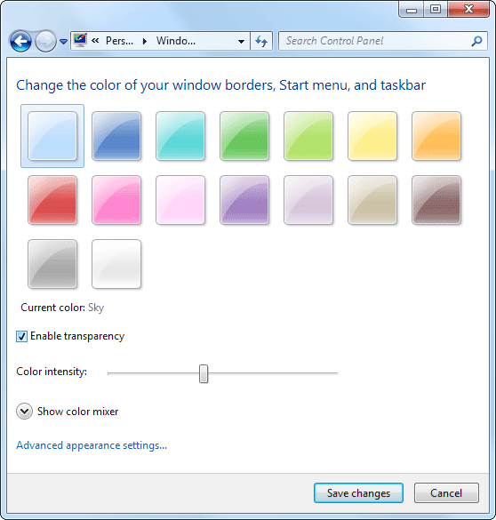

Free
computer Tutorials
|
Free
computer Tutorials
|
|
 back back |
Stay at Home and Learn | ||||
Desktop Backgrounds and WallpapersWindows 7 lets you easily change the image you see on your desktop. This is called the Desktop background, or Desktop wallpaper.
To chage your Desktop Wallpaper, click anywhere on the desktop with your right mouse button, and you should see a menu appear:  One of the items on the menu allows you to personalize your desktop screen. So click on Personalize with your left mouse button to see a window appear. This one:  The main area in the screen above let's you select a Theme from the available list. A Theme sets not only your desktop background, but also a screensaver, the colour of windows, sounds, and mouse pointers. And all that with just one click! If you just want to set background wallpaper, however, select Desktop Background from the bottom left. The default is called Harmony. When you click on Desktop Background you should see something like the following:  You can select a picture from the ones available by clicking on it with your left mouse button. Your desktop background will then change. To make the change permanent, click the Save Changes button at the bottom.
If you have a picture of your own, you can use this instead
of the ones built-in to Windows 7. To set your own picture, click the
dropdown list at the top, where it says Windows Desktop Background:  Here, we have moved to the Pictures Library folder to see what images are available. Another option is to click the Browse button. When you do, you'll see a dialogue box appear:  Browse to the folder where your images are and click OK. We have a folder called York with some images in it, so we've selected that one. When you click OK, you'll see the images in that folder:  Select the image you want to appear on your desktop from those available. If you would like a slideshow of all the images in the folder, then click the Select All button. If you click the Select All button then the dropdown list at the bottom becomes available:  This list lets you choose how often each image in the slideshow is displayed before moving on to the next one. The default is 10 seconds. Another area to play around with is the Picture Position.
Click the black arrow to see a dropdown list:  Select each one in turn and watch what happens. When you are happy with your choices, click Save Changes.
You will then be taken back to the first screen: 
Windows ColourAnother interesting area to play around is the Windows
Colour area, circled in red in the image above. Click the link to see
the following screen:  Things like the start menu, the taskbar, and the areas
around programmes can all have the same colour scheme. The default is
called Sky. Click one of the other colours above and watch what happens
to your Taskbar at the bottom. Click the round Start button on the left
of the Taskbar and you'll see that its colour too has changed. Uncheck
the box that says "Enable transparency" and you'll see a deeper
colour for the one you have chosen. If you don't like the colours available, click the arrow
to the left of Show Color Mixer. Then play around with the controls.
To get back to the default colours, just click the colour square in
the top left of the screen, which is Sky. In the next section, we'll have a closer look at the Taskbar in Windows 7.
|
|||||
|